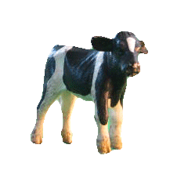
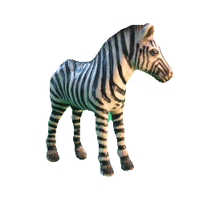
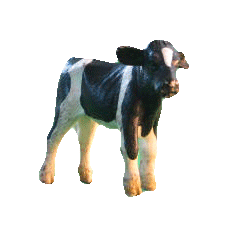
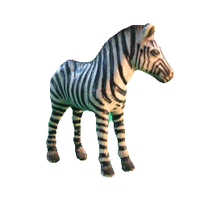

Christian's Website
Discover fascinating stories, miracles, and relics from Christian history. Explore our featured topics below:
| Topic | Description | Example |
|---|---|---|
| Marian Apparitions | Accounts of the Virgin Mary's appearances | Our Lady of Fatima |
| Eucharistic Miracles | Extraordinary events involving the Holy Eucharist | Miracle of Lanciano |
| Shroud of Turin | The history and study of the sacred relic | X-ray scattering analysis |
 


